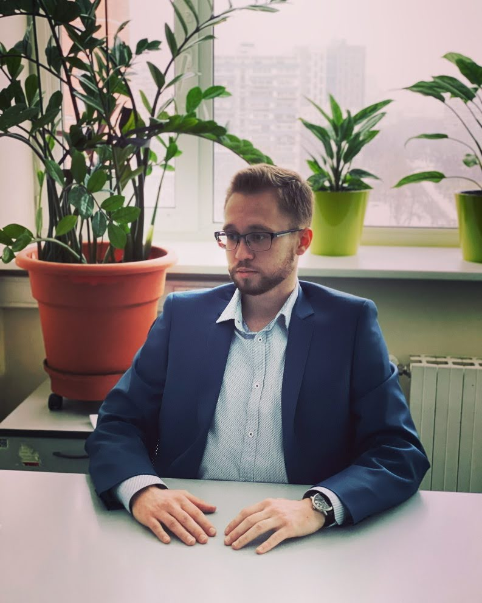

Илья Фоминых

Обо мне
Родился в 1998 г. Живу в Москве
Образование
2015-2019 Лондонская школа экономики и политических наук (LSE) (удаленно)
Бакалавр наук в области банковского дела и финансов, диплом с отличием
первой степени
Программа двух дипломов НИУ ВШЭ и Лондонского университета
Опыт работы
2020-наст.время
Онлайн бизнес-проект
- Стал квалифицированным инвестором и создал телеграм канал, чтобы привлечь потенциальных акционеров на фондовый рынок
- Создал бизнес-модель: "фримимум" (плата за доступ к закрытому премиум каналу)
- Привлек более 100 инвесторов на канал
07/2020 – 08/2020
Стажер-аналитик, Департамент финансовых продуктов, Головной офис банка ВТБ (полный рабочий день), Москва
06/2018 – 08/2018
Стажер, Отдел торгового финансирования и корреспондентских отношений, Банк "Сбербанк КИБ" (полный рабочий день), Москва
Хобби
тренажерный зал, репетиторство, портфельные инвестиции, философия, текущая экономическая и политическая обстановка
Как я стал разработчиком
- 17.10.2022 Записался на курс "Надежный старт в IT"
- 20.10.2022 Прошел вводный курс по frontend и понял, что мне это очень интересно
- 03.02.2023 Выбрал курс Frontend разработчик PRO